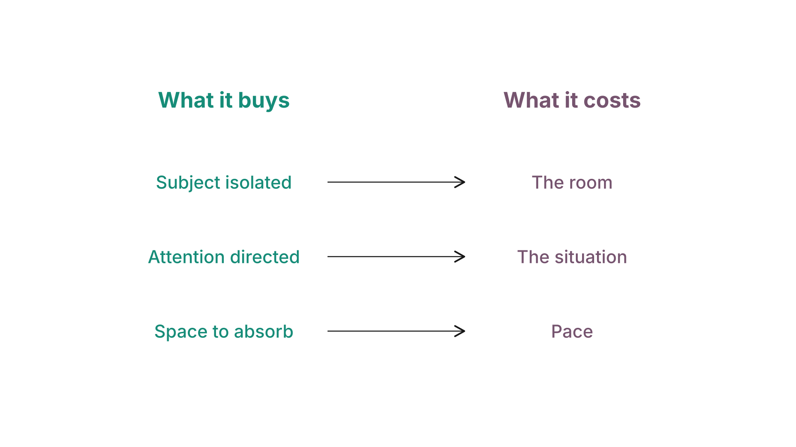

Week 1 slidesVisual literacy
What was on screen in class. Arrow keys or click to move.
1 / 26
Title
COMM 260
Introduction to Digital Media Production
Week 1 — Visual literacy
2 / 26
The opening image
Why do you like it?
Generated image
3 / 26
Those are preferences.
For fifteen weeks I will ask you why you made a choice.
"It looked better" is not an answer.
4 / 26
Check — preference or named choice
Which of these is a named choice, not a preference?
5 / 26
This week
You are not making anything.
You are learning to say what other people made.
You cannot defend a choice you cannot name.
6 / 26
Outcomes
By the end of this week you can
- Read an image and name what it is doing
- Identify the choices a maker made
- Tell a deliberate choice from a default
- Say what a choice accomplishes — and what the alternative would have cost
7 / 26
The frame
What is in it was put there.
What is outside it was excluded.
8 / 26
What is outside this edge?
What is just outside this edge?
Generated image
9 / 26
Three ways to direct the eye
| Focus | Sharp against soft |
| Light | Bright against dim |
| Colour | Saturated against muted |
Every one of them is a contrast. Nothing reads first on its own.
Generated image
10 / 26
Check — what is doing the work?
What is making the subject read first here?
Generated image
11 / 26
This has a name
Subject emphasis — what makes the subject read first.
Five means, contrast among them.
Week 2 asks you which one is doing the most work.
12 / 26
Now the ear
13 / 26
What did you hear?
14 / 26
The same passage, pauses closed
What changed?
15 / 26
Silence was doing work.
It was invisible because nothing was there.
16 / 26
Choice, or default?
Grain. Handheld camera. Compressed audio.
Was it decided — or is that just how it came out?
17 / 26
The test question
What would it have taken to do otherwise?
18 / 26
Check — deliberate or default?
A documentary is shot handheld throughout, in a cramped flat, at night. Deliberate choice, or default?
Generated image
19 / 26
You are not graded on guessing intent
You are graded on telling a decision from an accident —
and on saying what the alternative would have required.
20 / 26
Every choice costs something
Shallow depth isolates the subject → loses the room
A tight crop focuses attention → loses the context
Silence creates space → costs pace

21 / 26
Check — what did it cost?
A photographer crops tight to a pair of hands working. What did it cost?
22 / 26
Observant, or a producer
Naming what a choice accomplishes makes you observant.
Naming what it cost makes you a producer.
23 / 26
The vocabulary match
Match the term to what it does
24 / 26
This photograph, an hour ago
I put it up at the start of class and asked why you liked it. Your answers are still exactly as you said them.
Take one. What is it doing? Which part reads first? What did it cost?
Someone said: "I like the yellow."
Everything else on this street is grey, so the umbrella is the only colour in the frame. You find her before you know why — and it costs the street, because you stop noticing anyone else out in the rain.
Same observation. Now it is a named choice.
Generated image
25 / 26
The glossary
You get it this week. It does not change.
One term, one meaning, for fifteen weeks.
Read the Never use column. That is the part that makes it binding.
26 / 26
Due this week
Three choices — one per piece.
For each: the choice, what it accomplishes, and what the alternative would have cost.
Module summative · 5% of your course grade